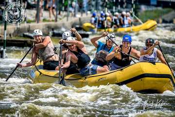
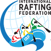
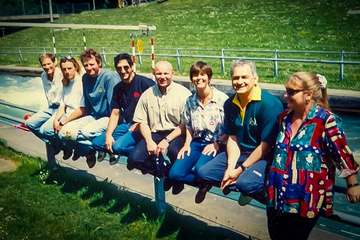
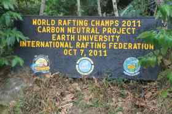
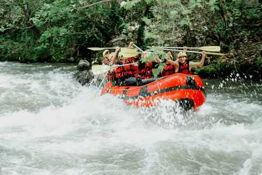
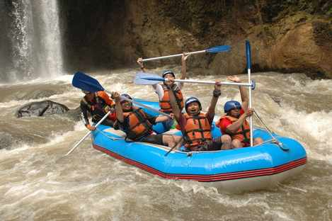
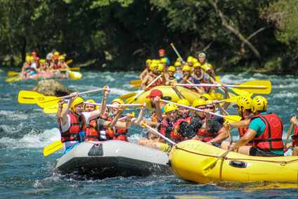
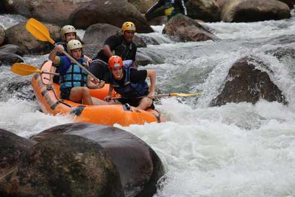
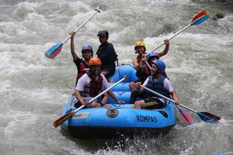

The International Rafting Federation (IRF) has a long and respected history from early international rafting events in the late 1980s through to the global organisation it is today.



The International Rafting Federation (IRF) has a long and respected history from early international rafting events in the late 1980s through to the global organisation it is today.

A growing need and demand for an official body that could represent and unite the rafting communities of the world stimulated a group of people, led by Lee Porter, to form the IRF in 1997.
The founding group who met in Augsburg, Germany were: Lee Porter, Peter Micheler, Rafael Gallo, Tony Hansen, Sue Liell-Cock, Neil Baxter, Glenn Lewman, Zeljko Kelemen and Thomas Karas.
Developed prior to and then approved at the 1998 Congress, the Guide Training & Education (GTE) System is continually improving and expanding reach as demand grows for the formal and recognised competence of raft guides across the globe from individual guides, rafting operators, insurance companies and governing bodies. The IRF GTE system is the only globally recognised raft guide certification scheme.




